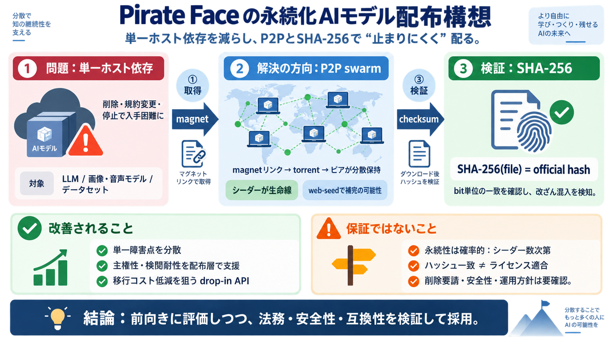

Pirate Face Launches Permanent Decentralized Layer for Sovereign AI | Trending Stories | HyperAI
The network leverages BitTorrent technology enhanced with BEP-19 web-seeds, which embed direct Hugging Face download lin…

Hugging Faceの“消えるリスク”に対し、P2PトレントとSHA-256整合性で、AIモデルを止まりにくく配る構想です。
モデルは特定のホスティング（例：Hugging Face）に依存しがちで、削除・規約変更・停止が起きると利用者は入手できなくなる可能性があります。
モデルを「torrentの群れ（swarm）」として分散し、特定ホストが止まってもピアがデータを維持する可能性を高めます。
pirateface.co がHugging Faceのオープンモデルを、magnet（磁気リンク）とトレントとして複製し、世界中のピアが保持する形を目指します。
“checksum-verified”として、各ファイルのSHA-256が Hugging Face側の公式ハッシュと一致するかを検証し、改ざんや混入の可能性を下げます。
改ざんされていない（ハッシュ一致）ことと、ライセンスや権利が適合していることは別問題です。前者は担保しやすく、後者は別の判断が必要になります。
既存ワークフローを変えにくくするため、エンドポイント差し替え程度で動く“drop-in API”（近いAPI/同等の参照パス）を目指す方向性が示されています（“SOON”など未確定の記載もあり）。
作成者の一致を確認するための“handle”と、Hugging Faceのverification（一致確認）によるなりすまし抑制が意図されています。
この構想は“死ににくさ”を狙いますが、可用性はトレントの維持（シーダー数・保持状況・ネットワーク）に左右され、“必ず入手できる”わけではありません。
配布は「magnetで取得 → swarmで補完 → SHA-256で整合確認」という流れを想定しています。
“削除されたら必ず終わりか？”や“checksum-verifiedの意味は？”などのFAQが、設計意図を要約します。
技術的“永続化”は評価できても、法務・ガバナンス・安全性は別枠で確認が必要です。
P2P分散とSHA-256整合性の組み合わせは、単なるコピー共有より信頼性設計に近い一方、無リスクの保証にはなりません。
この要約は、提示された入力文に基づき構成されています。補足として言及のあった外部情報も併記します。
The network leverages BitTorrent technology enhanced with BEP-19 web-seeds, which embed direct Hugging Face download lin…
August 26, 2026 # The Hugging Face incident and the road ahead In July 2026, during internal cybersecurity evaluations…
of our entire infrastructure." [...] As a precaution, Hugging Face has revoked a number of tokens in those secrets. (Tok…
AI is changing fast. Behavioral security helps you keep up. Join Darktrace’s September 22 broadcast to see how → # Hugg…
# AI Agent Autonomously Breached Hugging Face Infrastructure. Guardrails Blocked Defenders! ## Embrace The Red 9890 subs…